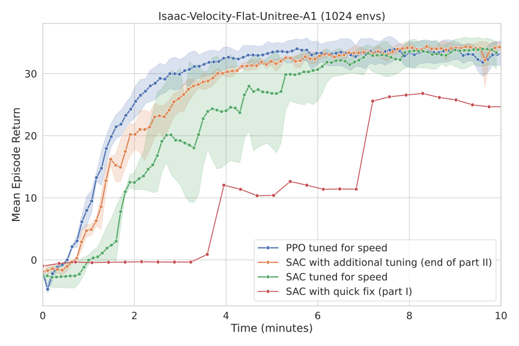
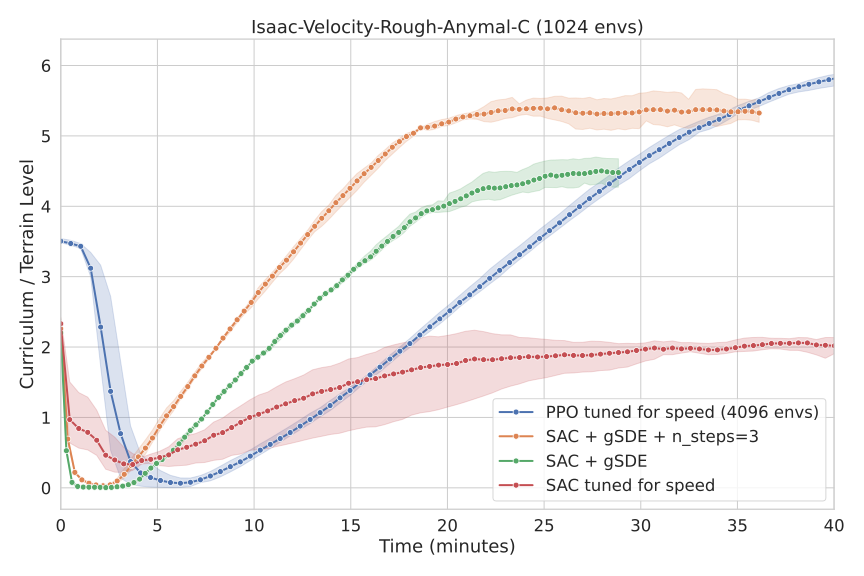
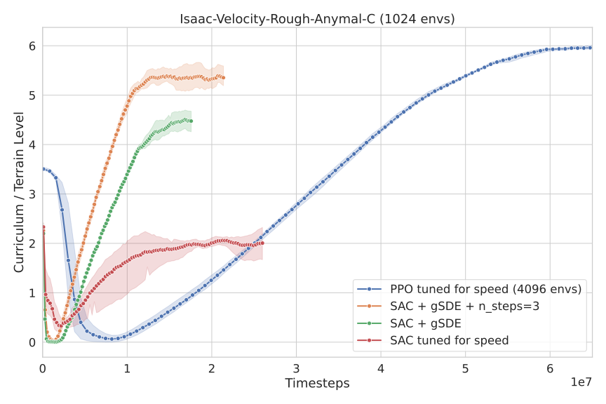

Getting SAC to Work on a Massive Parallel Simulator: Tuning for Speed (Part II)

This second post details how I tuned the Soft-Actor Critic (SAC) algorithm to learn as fast as PPO in the context of a massively parallel simulator (thousands of robots simulated in parallel). If you read along, you will learn how to automatically tune SAC for speed, how to find better action boundaries, and what I tried that didn’t work.
- Part I is about analysing why SAC doesn’t work how of the box on Isaac Sim environments.
- Part II is about tuning SAC for speed and making it work as good as PPO.
In the Previous Episode…
In the first part, I stopped at the point where we could detect some signs of life from SAC (it was learning something).
By limiting the action space limits to 3% of the original size, and quickly tuning SAC (bigger network, reduced initial exploration rate), I could get SAC to learn to solve the Unitree A1 task on a flat surface in a matter of minutes.
However, SAC took more time to train than PPO (12 minutes vs. 6 minutes), and it did not reach PPO’s performance level. Luckily, I still had several ideas for improving SAC’s training speed and performance1.
Defining Proper Action Bound - Extracting the Limits with PPO
First, I wanted to define the action space more precisely. Correctly defining the boundaries of the action space is important for both the speed of convergence and the final performance. A larger action space gives the agent more flexibility, which can lead to better performance, but slower learning. Conversely, a smaller action space can accelerate learning, though it may result in suboptimal solutions.
Thus, rather than simply restricting the action space to a small percentage of the original, I recorded the actions taken by a trained PPO agent and took the 2.5th and 97.5th percentiles for the new limits. In other words, the new action space contains 95% of the actions commanded by a trained PPO agent2:
# np.percentile(actions, 2.5, axis=0)
low = np.array([-2.0, -0.4, -2.6, -1.3, -2.2, -1.9, -0.7, -0.4, -2.1, -2.4, -2.5, -1.7])
# np.percentile(actions, 97.5, axis=0)
high = np.array([1.1, 2.6, 0.7, 1.9, 1.3, 2.6, 3.4, 3.8, 3.4, 3.4, 1.9, 2.1])
Need for Speed or: How I Learned to Stop Worrying About Sample Efficiency
The second aspect I wanted to improve was the hyperparameters of the SAC algorithm. The default hyperparameters of the SAC algorithm are optimized for sample efficiency. While this is ideal for learning directly on a single real robot, it is suboptimal for training thousands of robots in simulation.
In part one, I quickly tuned SAC by hand to get it up and running. This was sufficient for obtaining initial results, but it would be very time-consuming to continue tuning manually in order to reach PPO’s performance level. That’s why I turned to automatic hyperparameter optimization.
If you are not familiar with automatic hyperparameter tuning, I wrote two blog posts about it:
- Automatic Hyperparameter Tuning - A Visual Guide (Part 1)
- Automatic Hyperparameter Tuning - In Practice (Part 2) shows how to use the Optuna library to put these techniques into practice
New Objective: Learn as Fast as Possible
Since I’m using a massively parallel simulator, I no longer care about how many samples are needed to learn something, but rather, how quickly it can learn, regardless of the number of samples used. In practice, this translates to an objective function that looks like this:
def objective(trial: optuna.Trial) -> float:
"""Optimize for best performance after 5 minutes of training."""
# Sample hyperparameters
hyperparams = sample_sac_params(trial)
agent = sbx.SAC(env=env, **hyperparams)
# Callback to exit the training loop after 5 minutes
callback = TimeoutCallback(timeout=60 * 5)
# Train with a max budget of 50_000_000 timesteps
agent.learn(total_timesteps=int(5e7), callback=callback)
# Log the number of interactions with the environments
trial.set_user_attr("num_timesteps", agent.num_timesteps)
# Evaluate the trained agent
env.seed(args_cli.seed)
mean_reward, std_reward = evaluate_policy(agent, env, n_eval_episodes=512)
return mean_reward
The agent is evaluated after five minutes of training, regardless of how many interactions with the environment were needed (the TimeoutCallback forces the agent to exit the training loop).
SAC Hyperparameters Sampler
Similar to PPO, many hyperparameters can be tuned for SAC. After some trial and error, I came up with the following sampling function (I’ve included comments that explain the meaning of each parameter):
def sample_sac_params(trial: optuna.Trial) -> dict[str, Any]:
# Discount factor
gamma = trial.suggest_float("gamma", 0.975, 0.995)
learning_rate = trial.suggest_float("learning_rate", 1e-4, 0.002, log=True)
# Initial exploration rate (entropy coefficient in the SAC loss)
ent_coef_init = trial.suggest_float("ent_coef_init", 0.001, 0.02, log=True)
# From 2^7=128 to 2^12 = 4096, the mini-batch size
batch_size_pow = trial.suggest_int("batch_size_pow", 7, 12, log=True)
# How big should should the actor and critic networks be
# net_arch = trial.suggest_categorical("net_arch", ["default", "simba", "large"])
# I'm using integers to be able to use CMA-ES,
# "default" is [256, 256], "large" is [512, 256, 128]
net_arch_complexity = trial.suggest_int("net_arch_complexity", 0, 3)
# From 1 to 8 (how often should we update the networks, every train_freq steps in the env)
train_freq_pow = trial.suggest_int("train_freq_pow", 0, 3)
# From 1 to 1024 (how many gradient steps by step in the environment)
gradient_steps_pow = trial.suggest_int("gradient_steps_pow", 0, 10)
# From 1 to 32 (the policy delay parameter, similar to TD3 update)
policy_delay_pow = trial.suggest_int("policy_delay_pow", 0, 5)
# Polyak coeff (soft update of the target network)
tau = trial.suggest_float("tau", 0.001, 0.05, log=True)
# Display true values
trial.set_user_attr("batch_size", 2**batch_size_pow)
trial.set_user_attr("gradient_steps", 2**gradient_steps_pow)
trial.set_user_attr("policy_delay", 2**policy_delay_pow)
trial.set_user_attr("train_freq", 2**train_freq_pow)
# Note: to_hyperparams() does the convertions between sampled value and expected value
# Ex: converts batch_size_pow to batch_size
# This is useful when replaying trials
return to_hyperparams({
"train_freq_pow": train_freq_pow,
"gradient_steps_pow": gradient_steps_pow,
"batch_size_pow": batch_size_pow,
"tau": tau,
"gamma": gamma,
"learning_rate": learning_rate,
"policy_delay_pow": policy_delay_pow,
"ent_coef_init": ent_coef_init,
"net_arch_complexity": net_arch_complexity,
})
Replay Ratio
A metric that will be useful to understand the tuned hyperparameters is the replay ratio.
The replay ratio (also known as update-to-data ratio or UTD ratio) measures the number of gradient updates performed per environment interaction or experience collected.
This ratio represents how many times an agent updates its parameters relative to how much new experience it gathers.
For SAC, it is defined as replay_ratio = gradient_steps / (num_envs * train_freq).
In a classic setting, the replay ratio is usually greater than one when optimizing for sample efficiency. That means that SAC does at least one gradient step per interaction with the environment. However, in the current setting, since collecting new data is cheap, the replay ratio tends to be lower than 1/4 (one gradient step for every four steps in the environment).
Optimization Result - Tuned Hyperparameters
To optimize the hyperparameters, I used Optuna’s CMA-ES sampler for 100 trials3 (taking about 10 hours with a population size of 10 individuals). Afterward, I retrained the best trials to filter out any lucky seeds, i.e., to find hyperparameters that work consistently across different runs.
This is what the optimization history looks like. Many sets of hyperparameters were successful:

Hyperparameter optimization history
These are the tuned hyperparameters of SAC found by the CMA-ES sampler while optimizing for speed:
batch_size: 512
buffer_size: 2_000_000
ent_coef: auto_0.009471776840423638
gamma: 0.983100250213744
gradient_steps: 32
learning_rate: 0.00044689099625712413
learning_starts: 2000
policy: MlpPolicy
policy_delay: 8
policy_kwargs:
net_arch: [512, 256, 128]
activation_fn: !!python/name:isaaclab_rl.sb3.elu ''
optimizer_class: !!python/name:optax._src.alias.adamw ''
layer_norm: true
tau: 0.0023055560568780655
train_freq: 1
Compared to the default hyperparameters of SAC, there are some notable changes:
- The network architecture is much larger (
[512, 256, 128]vs.[256, 256]), but similar to that used by PPO in Isaac Sim. - The lower replay ratio (RR ≈ 0.03 for 1024 environments, or three gradient steps every 100 steps in an environment) and higher policy delay (update the actor after eight actor updates) make it faster, as less time is taken for gradient updates.
- The discount factor is lower than the default value of 0.99, which favors shorter-term rewards.
Here is the result in video and the associated learning curves4:
Learning curve on the Unitree A1 task using 1024 envs.
Trained SAC agent after automatic tuning.
With these tuned hyperparameters, SAC learns faster (than in part I), achieves higher performance, and the learned gaits look better (no more feet in the air!). What more could you ask for?
Does it work? - More Environments
After it successfully learned on the flat Unitree A1 environment, I tested the same hyperparameters (with the same recipe5) on the GO1, GO2, Anymal-B, and Anymal-C environments, as well as the flat Disney BD-X environment and … it worked!
Trained SAC agent in different environments, using the same tuned hyperparameters.
Then, I trained SAC on the “rough” locomotion environments, which are harder environments where the robot has to learn to navigate steps and uneven, accidented terrain (with additional randomization). And … it worked partially.
Solving Harder Environments
Identifying the problem: Why it doesn’t work?
In the “Rough” environment, the SAC-trained agent exhibits inconsistent behavior. For example, one time the robot successfully climbs down the pyramid steps without falling; at other times, however, it does nothing. Additionally, no matter how long it is trained, SAC does not seem to be able to learn to solve the “inverted pyramid”, which is probably one of the hardest tasks:
The inverted pyramid task.
I decided to isolate this task by training SAC only on the inverted pyramid. Upon further inspection, it appeared to be an exploration problem; that is, SAC never experiences successful stepping when executing random movements. This reminded me of SAC failing on the mountain car problem because the exploration was inconsistent (the default high-frequency noise is usually a bad default for robots).
Improving Exploration and Performance
To test this hypothesis, I simplified the problem by lowering the step of the inverted pyramid and used a more consistent exploration scheme, gSDE (that I developed during my PhD to train RL directly on real robots).
In its simplest form, gSDE repeats the noise vector for $n$-steps, instead of sampling it at every timestep. In other words, instead of selecting actions following $a_t = \mu_\theta(s_t) + \epsilon_t$6 and sampling $\epsilon_t \sim N(0, \sigma^2)$ at every step during exploration, gSDE samples $\epsilon \sim N(0, \sigma^2)$ once and keeps $\epsilon$ constant for $n$-steps. With this improved exploration, the robot could finally learn to partially solve this task.
Trained SAC agent with gSDE and n-step return in the "Rough" Anymal-C environment.
There was still a big gap in final performance between SAC and PPO.
To close the gap, I drew inspiration from the recent
FastTD3 paper and implemented
n-step returns for all off-policy algorithms in SB3.
Using n_steps=3 allowed SAC to finally solve the hardest task7!
In summary, here are the additional manual changes I made to the hyperparameters of SAC compared to those optimized automatically:
# Note: we must use train_freq > 1 to enable gSDE
# which resamples the noise every n steps (here every 10 steps)
train_freq: 10
# Scaling the gradient steps accordingly, to keep the same replay ratio:
# 32 * train_freq = 320
gradient_steps: 320
use_sde: True
# N-step return
n_steps: 3
And here are the associated learning curves4(plotting the current curriculum level on the y-axis8):
Learning curve on the Anymal-C "Rough" task using 1024 envs (except for PPO).
Learning curve in term of sample-effiency on the Anymal-C "Rough" task using 1024 envs (except for PPO).
In those plots, you can see the effect of gSDE and the use of n-step returns. SAC is also much more sample efficient than PPO.
Conclusion
This concludes the long journey I started a few months ago to make SAC work on a massively parallel simulator. During this adventure, I addressed a common issue that prevents SAC-like algorithms from working in these environments: the use of an unbounded action space. In the end, with a proper action space and tuned hyperparameters, SAC is now competitive with PPO7 in terms of training time (while being much more sample efficient) on a large collection of locomotion environments. I hope my voyage encourages others to use SAC in their experiments and unlock fine-tuning on real robots after pretraining in simulation.
Appendix: What I Tried That Didn’t Work
While preparing this blog post, I tried many things to achieve PPO performance and learn good policies in minimal time. Many of the things I tried didn’t work, but they are probably worth investigating further. I hope you can learn from my failures, too.
Using an Unbounded Gaussian Distribution
One approach I tried was to make SAC look more like PPO. In part one, PPO could handle an unbounded action space because it used a (non-squashed) Gaussian distribution (vs. a squashed one for SAC). However, replacing SAC’s squashed Normal distribution with an unbounded Gaussian distribution led to additional problems.
Without layer normalization in the critic, it quickly diverges (leading to Inf/NaN). It seems that, encouraged by the entropy bonus, the actor pushes toward very large action values. It also appears that this variant requires specific tuning (and that state-dependent std may need to be replaced with state-independent std, as is done for PPO).
If you manage to reliably make SAC work with an unbounded Gaussian distribution, please reach out!
KL Divergence Adaptive Learning Rate
One component of PPO that allows for better performance is the learning rate schedule (although it is not critical, it ease hyperparameter tuning). It automatically adjusts the learning rate to maintain a constant KL divergence between two updates, ensuring that the new policy remains close to the previous one (and ensuring that the learning rate is large enough too). It should be possible to do something similar with SAC. However, when I tried to approximate the KL divergence using either the log probability or the extracted Gaussian parameters (mean and standard deviation), it didn’t work. The KL divergence values were too large and inconsistent. SAC would probably need a trust region mechanism as well.
Again, if you find a way to make it work, please reach out!
Truncated Quantile Critics (TQC)
One idea I had to improve performance was to replace the SAC algorithm with its distributional counterpart Truncated Quantile Critics (TQC). Rather than approximating only the expected return, TQC models the distribution of returns. TQC’s performance tends to be on par with SAC’s, but it can outperform SAC in harder environments (at the cost of a slightly more expensive gradient step). TQC also has a parameter that controls the overestimation bias of the Q-value function (how many top quantiles to drop).
While writting this blog (and doing experiments), TQC tended to be more easy to tune. However, after finding good hyperparmaters for speed, SAC was faster and reach equivalent performance compared to TQC (except on the Disney robot env where TQC tend to work better).
En Vrac - Other Things I Tried
- penalty to be away from action bounds (hard to tune)
- action space schedule (start with small action space, make it bigger over time, tricky to schedule and didn’t improve performance)
- linear schedule (
learning_rate = LinearSchedule(start=5e-4, end=1e-5, end_fraction=0.15)), it helped for convergence when usingn_steps=1anduse_sde=False, but was not needed at the end
Appendix: SB3 PPO (PyTorch) vs. SBX PPO (Jax) - A Small Change in the Code, a Big Change in Performance

Learning curves for SB3 PPO and SBX PPO before and after the fix. SB3 PPO is the blue line. SBX PPO before is the yellow line, and SBX PPO after the fix is the grey line.
While writing this blog post, I regularly compared SAC to PPO. I have two implementations of PPO: SB3 PPO in PyTorch and SBX PPO in JAX. While comparing, I noticed two things. First, SBX PPO did not learn anything when observation normalization was turned off, whereas SB3 PPO did. Second, the dynamics of the standard deviation (its evolution over time) of the Gaussian distribution were different.
I investigated where the difference came from. SBX and SB3 share quite a bit of code, so I was surprised by such a significant difference. My main suspects were Jax vs. PyTorch because the Adam implementation and network initialization are different. I tried to use the same initialization for the weights and the same optimizer parameters, but I couldn’t get similar behavior at that time.
To dig deeper, I checked the statistics of the collected data to understand why the standard deviation was growing with the SBX implementation (instead of decreasing). I noticed something odd. The mean of the actions was not zero at the very beginning of training, and the standard deviation of the actions was much larger than expected (I was expecting std around 1.0, but got std=3.0 for instance). I realized that this was due to the last layer initialization, which was not producing actions close to zero at the beginning of training. Fixing this initialization problem solved my original issue (and the std of the actions during exploration): I could get similar performance with SB3 PPO and SBX PPO.
Citation
@article{raffin2025isaacsim,
title = "Getting SAC to Work on a Massive Parallel Simulator: An RL Journey With Off-Policy Algorithms",
author = "Raffin, Antonin",
journal = "araffin.github.io",
year = "2025",
month = "Feb",
url = "https://araffin.github.io/post/sac-massive-sim/"
}
Acknowledgement
I would like to thank Anssi, Leon, Ria and Costa for their feedback =).
Did you find this post helpful? Consider sharing it 🙌
Footnotes
-
I present the ones that didn’t work and could use help (open-problems) at the end of this post. ↩︎
-
I repeat the same process for any new environment where those boundaries would not work (taking sometime the 0.5 and 99.5 percentiles to have a larger space). ↩︎
-
Here, I only optimized for the Unitree A1 flat task due to limited computation power. It would be interesting to tune SAC directly for the “Rough” variant, including
n_stepsand gSDE train frequency as hyperparameters. ↩︎ -
The results are plotted for only three independent runs (random seeds). This is usually insufficient for RL due to the stochasticity of the results. However, in this case, the results tend to be consistent between runs (limited variability). I observed this during the many runs I did while debugging (and writting this blog post), so the trend is likely correct, even with a limited number of seeds. I only have one machine to run the tests, but I will try to run more tests in the coming weeks and update the plots. ↩︎ ↩︎
-
I updated the limits for each family of robots. The PPO percentiles technique worked nicely. ↩︎
-
$\mu_\theta(s_t)$ is the actor network output, it represents the mean of the Gaussian distribution. ↩︎
-
Although there is still a slight performance gap between SAC and PPO, after reading the FastTD3 paper and conducting my own experiments, I believe that the environment rewards were tuned for PPO to achieve a desired behavior. In other words, I’m suspecting that the weighting of the reward terms was asjuted for PPO. To achieve similar performance, different weights are probably needed for SAC. ↩︎ ↩︎
-
I’m plotting the current state of the terrain curriculum (the higher the number, the harder the task/terrain) as the reward magnitude doesn’t tell the whole story for the “Rough” task. ↩︎
Antonin Raffin
Research Engineer in Robotics and Machine Learning
Robots. Machine Learning. Blues Dance.